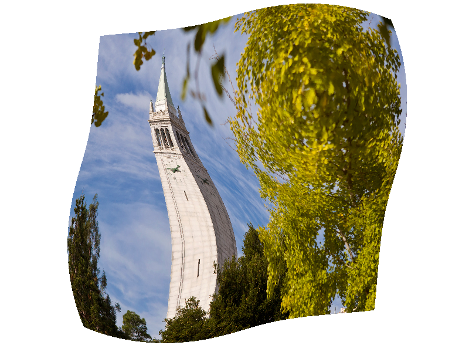

CS 184: Computer Graphics and Imaging, Spring 2018
Project 1: Rasterizer
Brian Santoso, CS184 Team: #1-lana-del-rey-fan
Overview
Give a high-level overview of what you implemented in this project. Think about what you've built as a whole. Share your thoughts on what interesting things you've learned from completing the project.
I implemented an svg rasterizer capable of rendering lines, points, triangles, transforms, and triangles with textures, and with methods to reducing aliasing effects. These methods include supersampling, pixel sampling and level sampling for texture mapping.
Section I: Rasterization
Part 1: Rasterizing single-color triangles
Walk through how you rasterize triangles in your own words.
I iterate through all the pixels of the bounding box containing the triangle defined by p0, p1, and p2. If the pixel is off-screen, then I skip the iteration and continue to the next.
For each pixel, I choose a sample point (x, y) at center of the pixel. Then I check if the sample point is inside the triangle using the 3-line test of (x, y) against each of the triangle's sides - in order to be invariant to clockwise or counter-clockwise order of the triangle vertices, I check if all the signs are the same (all 3 L(x, y) > 0 or all < 0).
If the sample point is inside the triangle, then I fill in the pixel corresponding to the chosen sample point with the given color.
Explain how your algorithm is no worse than one that checks each sample within the bounding box of the triangle.
My algorithm checks each sample within the bounding box of the triangle, therefore it is no worse than checking each sample box within the bounding box of the triangle (it's the same algorithm).
Show a png screenshot of basic/test4.svg with the default viewing parameters and with the pixel inspector centered on an interesting part of the scene.
Part 2: Antialiasing triangles
Walk through your supersampling algorithm and data structures.
I write to the resized sample buffer instead of drawing pixels directly into the framebuffer. The sample buffer functions much like the framebuffer but has size framebuffer's size * sample_rate (scaling up width and height by sqrt(sample_rate)). After all colors are calculated in the sample buffer, I finally write to the frame buffer by downsampling the sample_buffer, with the downsampled color being equal to the mean of each of the sample_rate supersamples corresponding to the pixel (i.e. "resolving").
Why is supersampling useful? What modifications did you make to the rasterization pipeline in the process? Explain how you used supersampling to antialias your triangles.
Supersampling is useful because we reduce aliasing effects by taking multiple samples for each pixel and combining them--in this case, with an average.
I had to change the rasterization pipeline by writing my calculated color values to a larger, intermediary sample buffer, whose size is framebuffer's size * sample_rate (scaling up width and height by sqrt(sample_rate)). Then, after all colors are calculated in the sample buffer, I finally write to the frame buffer by downsampling the sample_buffer, with the downsampled color being equal to the mean of each of the sample_rate supersamples corresponding to the pixel (i.e. "resolving").
To antialias my triangles using supersampling, I use a similar approach to Task 1, however I act as if the screen is scaled up by width and height by sqrt(sample_rate), essentially pretending that we are rendering a higher resolution image. The overall steps of the algorithm are the same as in Part 1, but with a larger buffer -- instead of writing directly to the frame buffer, I write to the sample buffer. I also make the optimization where I skip the current iteration if the current pixel is not within the sample_buffer's range.
Show png screenshots of basic/test4.svg with the default viewing parameters and sample rates 1, 4, and 16 to compare them side-by-side. Position the pixel inspector over an area that showcases the effect dramatically; for example, a very skinny triangle corner. Explain why these results are observed.
|
Sample Rate 1
|
Sample Rate 4
|
 Sample Rate 9
Sample Rate 9
|
Sample Rate 16
|
As the sample rate increases, the jagged edges of the skinny triangle get smoother. At sample rate 1 we are taking 1 sample per pixel, so the edge of the triangle are not being smoothed out. At sample rate 16 we are taking the average of 16 samples per pixel
Part 3: Transforms
Create an updated version of svg/transforms/robot.svg with cubeman doing something more interesting, like waving or running.
Feel free to change his colors or proportions to suit your creativity. Save your svg file as my_robot.svg in your docs/ directory and show a png screenshot
of your rendered drawing in your write-up. Explain what you were trying to do with cubeman in words.
 I tried to make cubeman do the dance move called "the dab" where you tuck your head into the elbow of one arm and extend your other arm in the opposite direction.
I tried to make cubeman do the dance move called "the dab" where you tuck your head into the elbow of one arm and extend your other arm in the opposite direction.
Section II: Sampling
Part 4: Barycentric coordinates
Explain barycentric coordinates in your own words and use an image to aid you in your explanation. One idea is to use a svg file that plots a single triangle with one red, one green, and one blue vertex, which should produce a smoothly blended color triangle.
Barycentric coordinates are a triplet of values that act as a normalized coordinate system for points inside triangles. The coordinates have the property that they add up to 1, meaning they have the convex hull property. This also means that they can be used to interpolate between 3 points. A geometric interprotation is that the barycentric coordinates are the percentage of area of the overall triangle occupied by the triangle created by the point inside the triangle and the oposite vertices.
In the above image, a triangle is rendered with its 3 vertices having colors red, green, and blue, respectively. We can interpolate between the values at each vertex using barycentric coordinates, taking a weighted sum of the colors according to their barycentric weights. Points inside the triangle closer to the red vertex will have more red, points closer to the blue vertex will have more blue, and points closer to the green vertex will have more green.
Show a png screenshot of svg/basic/test7.svg with default viewing parameters and sample rate 1. If you make any additional images with color gradients, include them.
Part 5: "Pixel sampling" for texture mapping
Explain pixel sampling in your own words and describe how you implemented it to perform texture mapping. Briefly discuss the two different pixel sampling methods, nearest and bilinear.
Pixel sampling is a way of choosing the colors for a pixel in the context of texture mapping when deciding how to determine a pixel's color based on uv coordinates in texture space. When rasterizing a pixel inside a triangle, I calculate the sample points' barycentric coordinates and use them to weight the uv texture coordinates assigned to each of the triangle vertices. This gives the sample point's corresponding uv coordinates in texture space. Then, depending on the pixel sampling method (nearest vs bilinear), I choose a color for the pixel by sampling the texture map at the uv coordinates.
With nearest pixel sampling, I simply use the texel nearest to the uv coordinate. But with bilinear pixel sampling, I interpolate the colors of the 4 nearest texels to the uv coordinate in the texture map.
Check out the svg files in the svg/texmap/ directory. Use the pixel inspector to find a good example of where bilinear sampling clearly defeats nearest sampling. Show and compare four png screenshots using nearest sampling at 1 sample per pixel, nearest sampling at 16 samples per pixel, bilinear sampling at 1 sample per pixel, and bilinear sampling at 16 samples per pixel.
|
PSM: Nearest, Sample Rate: 1
|
PSM: Nearest, Sample Rate: 4
|
|
PSM: Bilinear, Sample Rate 9
|
PSM: Bilinear, Sample Rate 16
|
Comment on the relative differences. Discuss when there will be a large difference between the two methods and why.
The text in the berkeley logo is clearer. There will be a large difference between the two methods when there are high signal frequencies, e.g. sharp triangles and extreme warping, or the sample rate is too low to capture enough texels (such as a low resolution texture). This is because the nearest sampling method may miss crucial texels, while bilinear sampling smooths out the image by lerping between 4 adjacent texels.
Part 6: "Level sampling" with mipmaps for texture mapping
Explain level sampling in your own words and describe how you implemented it for texture mapping.
Level sampling is a method of determining which mipmap level to use for texture mapping. A mipmap contains many precomputed versions of a texture in which high frequencies and filtered out and the texture is downsampled.
You can now adjust your sampling technique by selecting pixel sampling, level sampling, or the number of samples per pixel. Describe the tradeoffs between speed, memory usage, and antialiasing power between the three various techniques.
Increasing samples per pixel with reduce aliasing effects but at the cost of speed and memory usage.
Changing pixel sampling method from nearest to bilinear will reduce texture aliasing effects but at the cost of speed and memory usage.
Chaning level sampling from zero->nearest->bilinear will reduce texture aliasing effects but at the cost of speed and memory usage.
Using a png file you find yourself, show us four versions of the image, using the combinations of L_ZERO and P_NEAREST, L_ZERO and P_LINEAR, L_NEAREST and P_NEAREST, as well as L_NEAREST and P_LINEAR.
|

L_ZERO and P_NEAREST
|
 L_ZERO and P_LINEAR
L_ZERO and P_LINEAR
|
|
L_NEAREST and P_NEAREST
|
L_NEAREST and P_LINEAR
|
Section III: Art Competition
If you are not participating in the optional art competition, don't worry about this section!
Part 7: Draw something interesting!